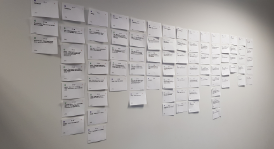
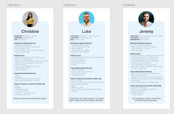
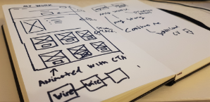
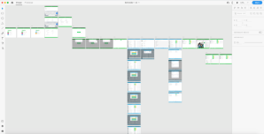

My Process
-
Understand
This project originated as a request for tender for a new estimating software system for 150 Schneider electric buildings service engineers, this included a 20 page technical document that outlined their existing system and its shortcomings with their expectations of what a new system would be like.
It was clear from this document they wanted to make large scale improvements to how they delivered their “servicing” offer to benefit their customer but also to get much more visibility on contracts profitability and other PKI’s.
Unfortunately there were lots of contradiction within the document which I needed to investigate further. I surveyed, performed interviews and user testing with the engineers, their managers and relevant department heads.
 -
Define
After performing my research I created 4 major personas, sales engineer, regional manager, administrator and divisional director.
I created users flows and affinity diagrams to define my understanding of the problem. This really helped me clearly define the business logic and make sure this project would fully deliver on the needs of the business.
 -
Ideate
After defining the requirements, I then sketched low fidelity, high level concepts to answer some of the most difficult questions such as the user flow, interactions, technical limitations, and the overall planned solution.
 -
Prototype
I then used Adobe XD to create low fidelity prototypes of each of the main users flows for each of the personas and screen sizes.
I then defined a design system using the “Atom” methodology and applied this to the prototype.
I made the designs as interactive and “real world” as possible to demonstrate core concepts to stakeholders to make sure I had buy in and that the system would really meet their expectations.
 -
Validate
I also ran large focus groups with 30 stakeholders with 11 iPads all running Adobe XD connected to my machine. This allowed them to each to try the prototype as if it were real and collect as much real world feedback as possible.
-
Build
After iterating on the prototype and design I used Adobe XD, Confluence and JIRA to hand off my design to the software development team.
I then facilitated daily stand up’s and weekly sprints with the software development team to make sure we met our major milestone.
I also worked with the client to feedback weekly progress and to facilitate system integration with existing enterprise systems such as authentication server, SAP and IT security.
We delivered the project as expected ready for acceptance testing.
-
Test
I also ran large focus groups with 30 stakeholders with 11 iPads all running Adobe XD connected to my machine. This allowed them to each to try the prototype as if it were real and collect as much real world feedback as possible.
Tools